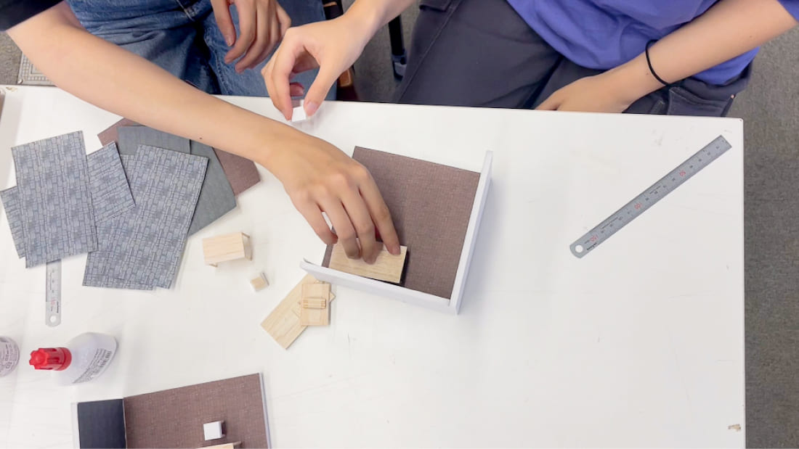
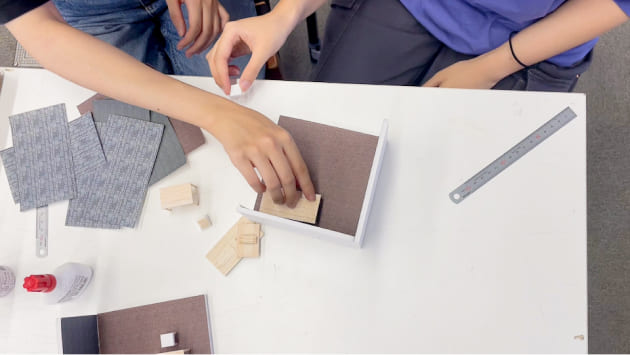
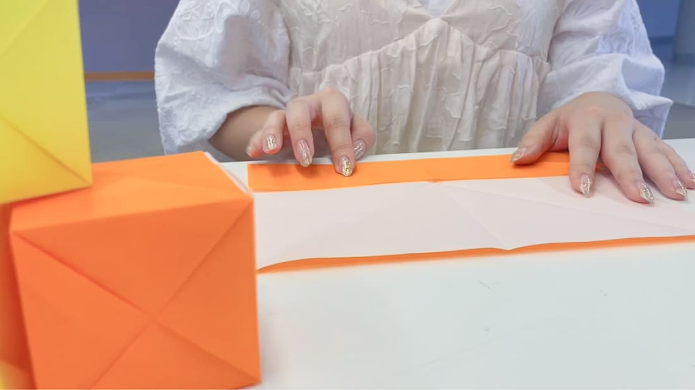
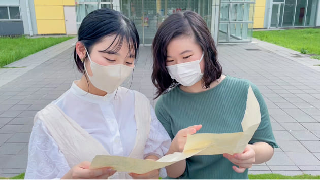

ワークショップ
Workshop
模型作り
芸工棟M102 参加費100円
GOOOONのコンセプトであるRPG風「自分だけのアジト」を作ってみませんか？真っ白な模型に壁紙や家具を配置しながら、オリジナル作品を作ってみてください。大人も子供も誰でも簡単に作ることができます！どんなアジトができるかは、そう、あなた次第！！出来上がったらおうちに連れて帰って誰かに自慢しよう:)


参加型
インスタレーション
芸工棟アトリウム前 参加費0円
投票箱のキューブをみんなで積み上げて、会場の皆さんで3つのモザイクアートを作りあげます。皆さんが何色のキューブをどこに配置するかでどんなものが出来上がるかが決まっていきます。テトリスみたいに並べたり、一色ごとに置いてみたり…どんな作品が出来上がるのでしょうか？！アトリウムのインテリアと一緒にインスタ映え写真も撮ってみてくださいね！

マップ作り
芸工棟M103 参加費100円
せっかく芸工祭を楽しむなら！あちこちのブースに潜んでいるイラストペーパーを集めて、どんな順番に回ったかを記録してみましょう。全てイラストペーパーを集められると、台紙にシーリングスタンプを押すことができます。古びた宝の地図のような台紙には、大人も子供もワクワクすること間違いなし！
